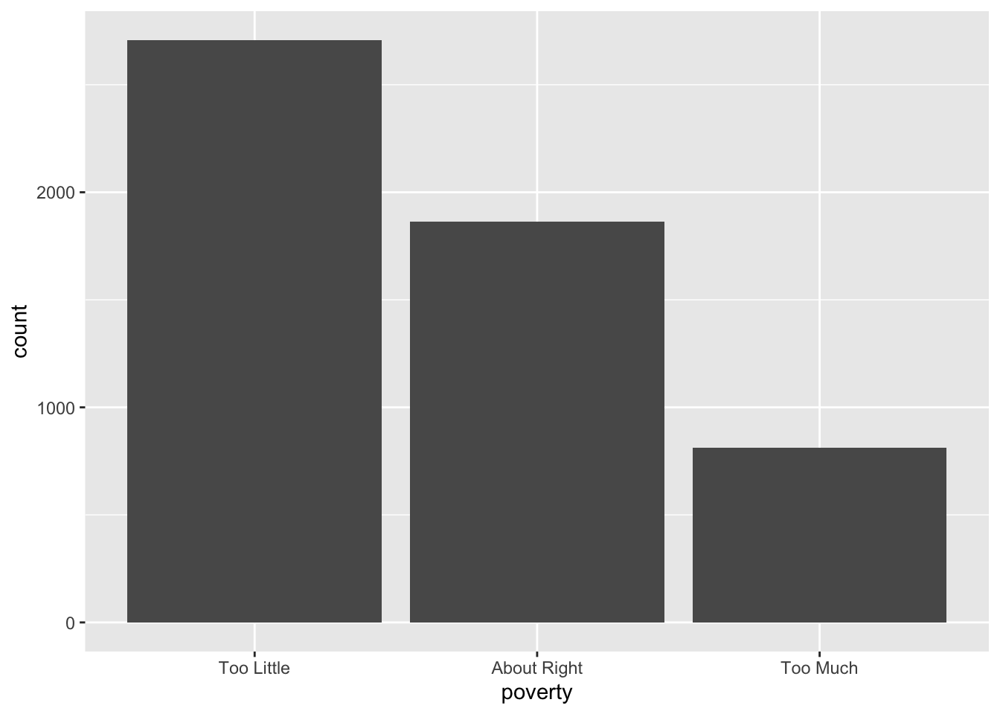
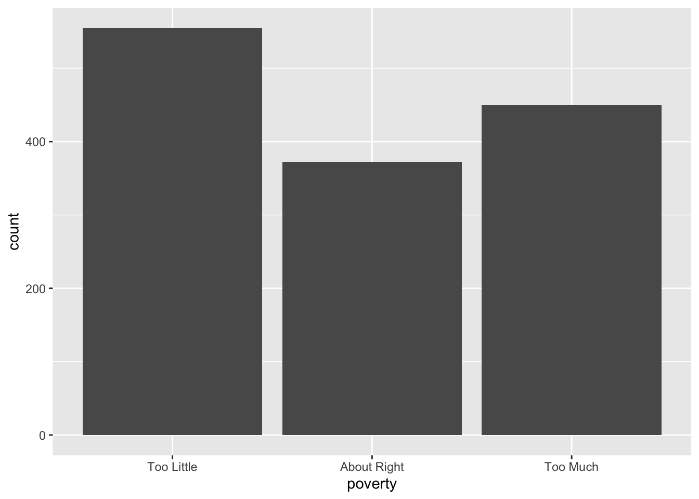
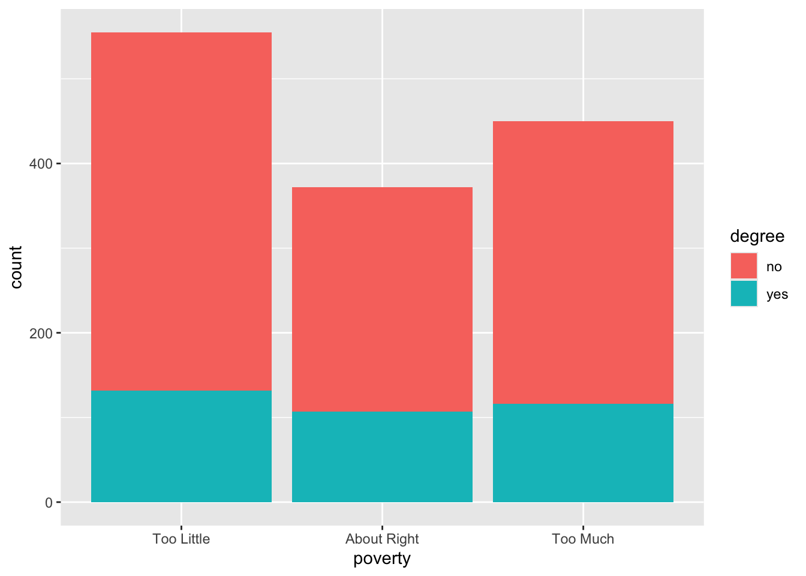
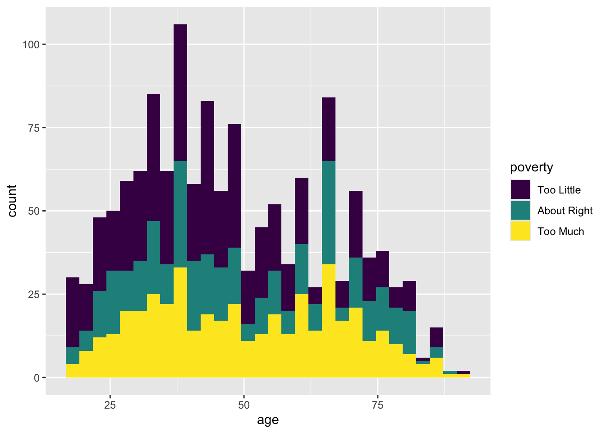

Portfolio 3
The Goal
Building off of the prior portfolio piece, this portfolio piece seeks to dive deeper into public opinion. In the portfolio piece before, I got a good idea of the aparent trends in demographics of the data participants involving country, gender, college degree, and religion. Finally, I also investigated the general consensus regarding the main poverty question of whether respective government’s were doing enough for the poverty issue.
The goal of this portfolio piece is to understand the trends in public opinion of government poverty action by country, specifically in the United States. I am going to create data visualizations that showcase the survey results of the United States with each of the three additional categorical variables in mind, gender, degree, and religion. Finally, we will look at how the continuous variable of age influences the responses to the poverty question within the United States.
The Data
We start with the data! The WVS data set is derrived from the carData package, viewed below.
## [1] 5381## [1] 6The WVS data set comes from a survey collected in the United States, Australia, Norway, and Sweden. They received 5381 responses with most coming from Australian and American participants.
The main variable of interest that the researchers intended to measure was public opinion of the respective government’s action towards dealing with poverty in that country. Participants were asked the given question: “Do you think that what the government is doing for people in poverty in this country is about the right amount, too much, or too little?” to which they could respond: “Too Little”, “About Right”, “Too Much”. Other variables accounted for are described below.
poverty “Do you think that what the government is doing for people in poverty in this country is about the right amount, too much, or too little?” (ordered): Too Little, About Right, Too Much
religion Member of a religion: no or yes.
degree Held a university degree: no or yes.
country Australia, Norway, Sweden, or USA.
age in years.
gender male or female.
This is a co-ed sample with almost an even distribution of male and female participants. Additionally, the data surveys variables such as having a college degree and being religious. Age is also accounted for in this data set and will be used in future portfolio pieces.
The Product
To start, here is the visualization produced in portfolio piece one that showcases the general trend of responses to the poverty question across all participants in all four countries.

As shown, the general majority believe their government is doing too little for the for the poverty issue in their country. To dive further, I will investigate whether this is a general trend across specific countries in particular or whether this is true across all. I will start with the United States to expand upon public opinion in the United States from Portfolio piece 1.
We are going to need to adjust our data set from the WVS data set. Firstly, I want to filter the data to only have responses from individuals based in the United States in order to gauge public opinion in the US. I am going to use the filter() function.
Now that I have a new data set with only the USA participants, I am going to provide a visualization of the poverty measure.

Now this is interesting. The United States does not appear to follow the general distribution found among all countries together. While “Too Litte” is still the leading answer, “Too Much” follows right behind which is different from the collective trend above where “About Right” had the second highest amount of responses. This is very interesting not only because there is a different distribution but because the two peaks are at the extremes of the scale.
Now I would like to see how this varies across age, gender, degree, and relgion.

Above is a bar plot that graphs responses to the poverty question with faceting for gender. As we can see, there is no clear skewing of the data based on gender as all participants, regardless of gender were split over poverty responses.

Above is a bar plot that graphs responses to the poverty question with faceting for whether or not the participant had a college degree. As we can see, there is no clear skewing of the data based on gender as all participants, regardless of gender were split over poverty responses. Though the majority of respondents did not have a degree, this did not produce any effect over the responses to the poverty question,
 Above is a bar plot that graphs responses to the poverty question with
faceting for whether or not the respondents were religious. As we can
see, there is no clear skewing of the data based on gender as all
participants, regardless of gender were split over poverty responses.
Though similar to the degree variable, most participants are religous
but we do not see any effects regarding the responses to the poverty
question.
Above is a bar plot that graphs responses to the poverty question with
faceting for whether or not the respondents were religious. As we can
see, there is no clear skewing of the data based on gender as all
participants, regardless of gender were split over poverty responses.
Though similar to the degree variable, most participants are religous
but we do not see any effects regarding the responses to the poverty
question.
As the three demographics above were categorical, we are unable to produce the same visualization for the continuous variable of age. Therefore, a histogram will be used to depict this variable and its effect on the poverty responses.
## `stat_bin()` using `bins = 30`. Pick better value `binwidth`. This distribution above plots the age of respondents and their respective response to the poverty question. Though there are simply more responses for individuals under the age of 50, we are able to see a slight trend in responses due to the variale of age. Younger individuals appear to respond more that the government is doing “Too Little” for the poverty issue while older individuals appear to answer that the government is doing “Too Much” for the poverty issue.
The Interpretation
The United States in general does appear to stray slightly from the general trend found among all four countries as the majority of responses are found within the two extremes of the question. Most people either think the United States government is doing “Too Little” or “Too Much” regarding the poverty issue but less participants think that the government is doing “Just Right” which is the second highest response across all four countries.
When we begin to consider the other four variables included in this data set, I hoped that I would see trends and patterns among certain variables and the responses. Although, the three categorical variables of gender, degree, and religion did not produce any effects on the response variable and retained a relatively even distribution across all responses. On the other hand, the continuous variable of age did produce some effect on the poverty responses as it seems more of the younger participants (below age 50) were more likely to respond that the government was doing “Too Little” whereas the older participants (above age 50) were more likely to respond that the government was doing “Too Much”.
These findings are very interesting as we begin to think about the reasons behind age effects and what this means for public opinion in the United States. I look forward to taking these findings forward in portfolio pieces to come.